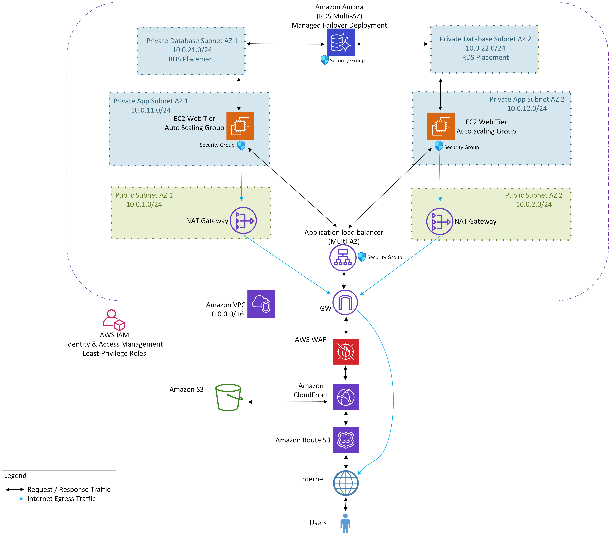

Project objective
Create a cloud architecture capable of supporting growth toward 10,000 users while maintaining security, availability, monitoring, and reasonable cost.
What I produced
- Created a custom VPC across two Availability Zones with public, private application, and private database subnets.
- Deployed EC2 through a launch template and Auto Scaling Group behind an Application Load Balancer.
- Placed CloudFront and AWS WAF in front of the application and enforced HTTPS with ACM.
- Applied IAM roles, layered security groups, CloudWatch dashboards and alarms, SNS notifications, and AWS Budgets.
- Reduced ongoing cost after validation by removing NAT gateways and lowering minimum capacity.
Key decisions
- Avoid the default VPC and separate public, application, and database tiers.
- Allow application traffic to EC2 only through the load balancer.
- Use CloudFront for HTTPS delivery and WAF rate limiting.
- Balance resilience with cost by using Auto Scaling and a low minimum instance count.
2 Availability ZonesMulti-AZ network design
10,000-user scenarioArchitecture planned for growth
1-2 instancesCost-aware Auto Scaling configuration
Validation and analysis
- Confirmed healthy targets and successful content delivery through CloudFront.
- Validated HTTPS, WAF, security groups, alarms, dashboard metrics, and budget controls.
- Tested replacement of unhealthy instances through Auto Scaling.
What I would improve next
- Add infrastructure as code and automated deployment pipelines.
- Add a managed database and application-level authentication.
- Restore private-subnet egress through controlled endpoints or NAT when production updates require it.